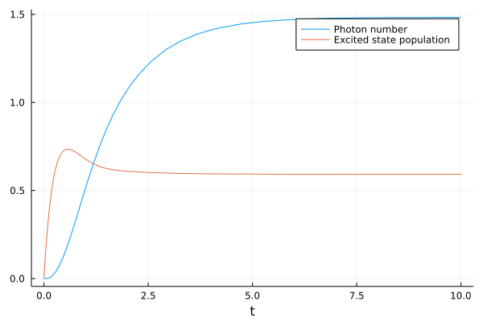

Tutorial
The basic usage is probably best illustrated with a brief example. In the following, we solve a simple model for a single-atom laser.
We start by loading the package, defining some symbolic parameters and the photonic annihilation operator a as well as the atomic lowering operator s. This allows us to quickly write down the Hamiltonian and the collapse operators of the system with their corresponding decay rates.
using Qumulants
# Define parameters
@parameters Δ g γ κ ν
# Define hilbert space
hf = FockSpace(:cavity)
ha = NLevelSpace(:atom,(:g,:e))
h = hf ⊗ ha
# Define the fundamental operators
a = Destroy(h,:a)
s = Transition(h,:σ,:g,:e)
# Hamiltonian
H = Δ*a'*a + g*(a'*s + a*s')
# Collapse operators
J = [a,s,s']
rates = [κ,γ,ν]Now, we define a list of operators of which we want to compute the Heisenberg equations. We will only consider products of two operators. This is because later we will compute the dynamics of the system up to second order.
# Derive a set of Heisenberg equations
ops = [a'*a,s'*s,a'*s]
he = heisenberg(ops,H,J;rates=rates)\begin{align} \frac{d}{dt} a^\dagger a =& -1.0 i g a^\dagger \sigma^{ge} + 1.0 i g a \sigma^{eg} -1.0 \kappa a^\dagger a \\ \frac{d}{dt} \sigma^{ee} =& -1.0 \gamma \sigma^{ee} -1.0 \nu \sigma^{ee} + 1.0 i g a^\dagger \sigma^{ge} -1.0 i g a \sigma^{eg} + \nu \\ \frac{d}{dt} a^\dagger \sigma^{ge} =& 1.0 i g \sigma^{ee} -1.0 i g a^\dagger a + 1.0 i \Delta a^\dagger \sigma^{ge} -0.5 \gamma a^\dagger \sigma^{ge} -0.5 \kappa a^\dagger \sigma^{ge} -0.5 \nu a^\dagger \sigma^{ge} + 2.0 i g a^\dagger a \sigma^{ee} \end{align}
The equations derived above are differential equations for operators. In order to convert them to c-number equations, we need to average over them. To obtain a closed set of equations, we expand higher-order products to second order.
# Average the above equations and expand to second order
he_avg = average(he,2)\begin{align} \frac{d}{dt} \langle a^\dagger a\rangle =& -1.0 i g \langle a^\dagger \sigma^{ge}\rangle + 1.0 i g \langle a \sigma^{eg}\rangle -1.0 \kappa \langle a^\dagger a\rangle \\ \frac{d}{dt} \langle \sigma^{ee}\rangle =& -1.0 \langle \sigma^{ee}\rangle \left( \gamma + \nu \right) + 1.0 i g \langle a^\dagger \sigma^{ge}\rangle -1.0 i g \langle a \sigma^{eg}\rangle + \nu \\ \frac{d}{dt} \langle a^\dagger \sigma^{ge}\rangle =& 1.0 i \langle \sigma^{ee}\rangle g + 2.0 i \left( \langle a^\dagger\rangle \langle a \sigma^{ee}\rangle + \langle a\rangle \langle a^\dagger \sigma^{ee}\rangle + \langle \sigma^{ee}\rangle \langle a^\dagger a\rangle -2 \langle a^\dagger\rangle \langle a\rangle \langle \sigma^{ee}\rangle \right) g -1.0 i g \langle a^\dagger a\rangle + 1.0 i \Delta \langle a^\dagger \sigma^{ge}\rangle -0.5 \gamma \langle a^\dagger \sigma^{ge}\rangle -0.5 \kappa \langle a^\dagger \sigma^{ge}\rangle -0.5 \nu \langle a^\dagger \sigma^{ge}\rangle \end{align}
The first-order contributions are always zero and can therefore be neglected. You can try adding a and s to the list of operators ops in order to see that yourself. Or, even more conveniently, you can use complete(he_avg), which will automatically find all missing averages and compute the corresponding equations.
Here, though, we will proceed by finding the missing averages, and neglecting them as zero using the substitute function.
# Find the missing averages
missed = find_missing(he_avg)
# Substitute them as zero
subs = Dict(missed .=> 0)
he_nophase = simplify_constants(substitute(he_avg, subs))\begin{align} \frac{d}{dt} \langle a^\dagger a\rangle =& -1.0 i g \langle a^\dagger \sigma^{ge}\rangle + 1.0 i g \langle a \sigma^{eg}\rangle -1.0 \kappa \langle a^\dagger a\rangle \\ \frac{d}{dt} \langle \sigma^{ee}\rangle =& -1.0 \langle \sigma^{ee}\rangle \left( \gamma + \nu \right) + 1.0 i g \langle a^\dagger \sigma^{ge}\rangle -1.0 i g \langle a \sigma^{eg}\rangle + \nu \\ \frac{d}{dt} \langle a^\dagger \sigma^{ge}\rangle =& 1.0 i \langle \sigma^{ee}\rangle g -1.0 i g \langle a^\dagger a\rangle + 1.0 i \Delta \langle a^\dagger \sigma^{ge}\rangle -0.5 \gamma \langle a^\dagger \sigma^{ge}\rangle -0.5 \kappa \langle a^\dagger \sigma^{ge}\rangle -0.5 \nu \langle a^\dagger \sigma^{ge}\rangle + 2.0 i \langle \sigma^{ee}\rangle g \langle a^\dagger a\rangle \end{align}
Finally, we can generate Julia code from the above set of equations which can be solved directly using the OrdinaryDiffEq.
# Generate a Julia function that to solve numerically
p = (Δ, g, γ, κ, ν)
f = generate_ode(he_nophase,p)
# Solve the system using the OrdinaryDiffEq package
using OrdinaryDiffEq
u0 = zeros(ComplexF64,length(ops))
p0 = (0, 1.5, 0.25, 1, 4)
prob = ODEProblem(f,u0,(0.0,10.0),p0)
sol = solve(prob,RK4())The photon number of our laser and the excited state population of the atom are now stored in the first two fields of sol.u.
using Plots
n = real.(getindex.(sol.u, 1))
pe = real.(getindex.(sol.u, 2))
plot(sol.t, n, label="Photon number", xlabel="t")
plot!(sol.t, pe, label="Excited state population")/home/travis/.julia/packages/GR/BwGt2/src/../deps/gr/bin/gksqt: error while loading shared libraries: libQt5Widgets.so.5: cannot open shared object file: No such file or directory
connect: Connection refused
GKS: can't connect to GKS socket application
GKS: Open failed in routine OPEN_WS
GKS: GKS not in proper state. GKS must be either in the state WSOP or WSAC in routine ACTIVATE_WS